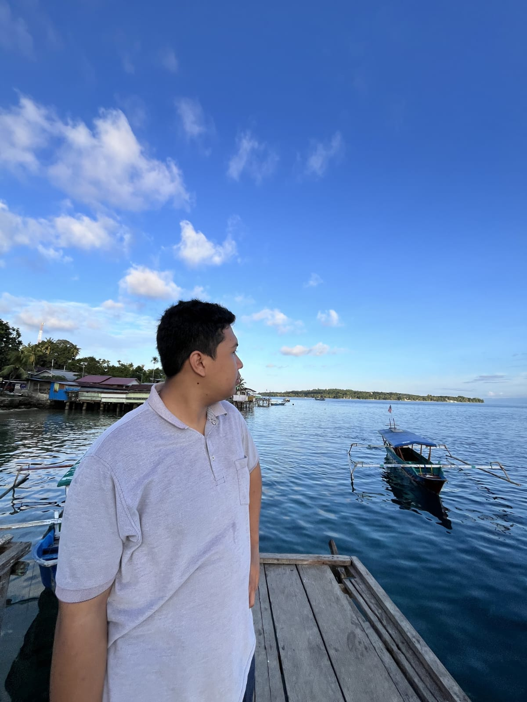

Halo, semua! Perkenalkan namaku Joshua Doharman Sinaga, dan biasa dipanggil 'Joshua'.
Saat ini, aku sedang berkuliah di Fakultas Ilmu Komputer dan Teknologi Informasi di Universitas Sumatera Utara, lebih tepatnya di Prodi Ilmu Komputer. Aku memiliki minat di bidang Cybersecurity.

C, C++, Python, Pascal, HTML, CSS.
Blue teaming
Aplikasi web offline untuk mencatat transaksi dan mengelola stok barang usaha keluarga.
Lihat Kedai123 →Aplikasi desktop berbasis C++ menggunakan framework Qt untuk perbandingan spek produk.
Lihat CheckMate →Nama: Joshua Doharman Sinaga
WhatsApp: +62 853 7390 2819
Email: joshuadoharman@students.usu.ac.id
Instagram: @joshuadoharman